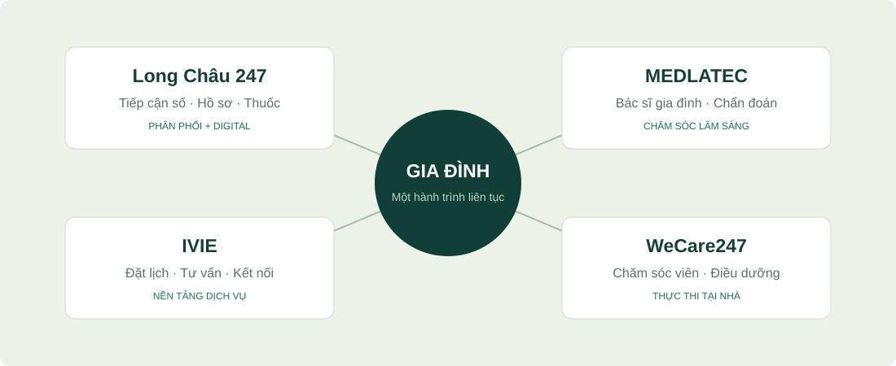
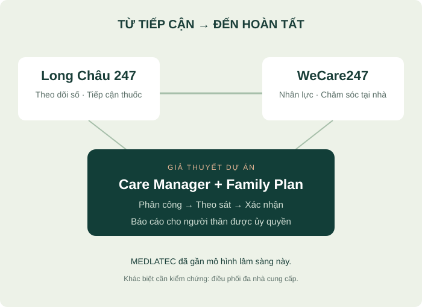
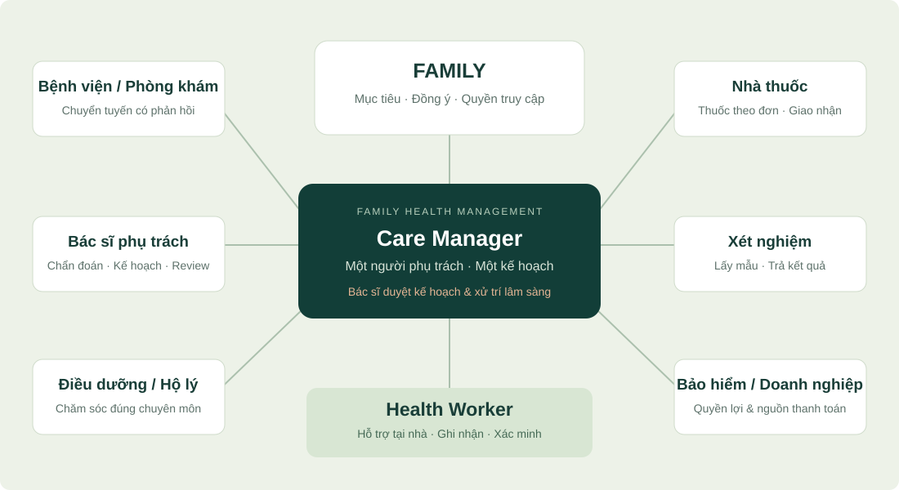

Family Health Management kết nối bác sĩ, chăm sóc tại nhà và các dịch vụ y tế thành một hành trình liên tục — có người theo sát và có kết quả để gia đình nhìn thấy.
Bốn yếu tố định hình cơ hội: nhu cầu chăm sóc liên tục, già hóa dân số, thu nhập tăng và chính sách ưu tiên chăm sóc sức khỏe chủ động.
NHU CẦU CHĂM SÓC
Gia đình cần một đầu mối theo sát
Bài toán của gia đình: kết nối lịch khám, đơn thuốc, xét nghiệm và người chăm sóc thành một kế hoạch chung.
Nhóm dự án hướng tới: gia đình đô thị có cha mẹ lớn tuổi hoặc người mắc bệnh mạn, trong khi con cái bận rộn.
Cơ hội đề xuất: có người điều phối, nhắc việc và báo cáo tiến độ cho người thân.
Đây là giả thuyết nhu cầu; cần xác nhận qua phỏng vấn và thử nghiệm dịch vụ.GIÀ HÓA DÂN SỐ
Nhu cầu chăm sóc dài hạn tăng
Mốc dự báo: Việt Nam bước vào giai đoạn dân số già từ năm 2034, theo dự báo NSO/UNFPA công bố cuối năm 2025. [1]
Hàm ý cho dịch vụ: cần theo dõi bệnh mạn, hỗ trợ sinh hoạt và phối hợp chăm sóc tại nhà.
Hướng tiếp cận: kết nối chăm sóc y tế với hỗ trợ hằng ngày, theo nhu cầu của từng người.
2034 là mốc dự báo, không phải hiện trạng; một số tài liệu trước đây sử dụng mốc 2036.THU NHẬP VÀ KHẢ NĂNG CHI TRẢ
Có dư địa cho dịch vụ trả phí định kỳ
Số liệu: thu nhập bình quân của người lao động năm 2025 đạt 8,4 triệu đồng/tháng, tăng 8,9% so với năm 2024. [2]
Hàm ý kinh doanh: thu nhập tăng có thể tạo điều kiện để một bộ phận gia đình chi thêm cho chăm sóc chủ động.
Điều cần kiểm chứng: mức giá chấp nhận được và quyền lợi khiến gia đình sẵn sàng gia hạn.
Thu nhập người lao động không đồng nghĩa với thu nhập hộ gia đình hoặc ngân sách dành cho sức khỏe.ĐỊNH HƯỚNG CHÍNH SÁCH
Ưu tiên dự phòng và quản lý sức khỏe
Định hướng: Nghị quyết 72-NQ/TW ngày 09/09/2025 thúc đẩy dự phòng, y tế cơ sở, khám định kỳ và sổ sức khỏe điện tử. [3]
Cơ hội cho dự án: xây dựng dịch vụ theo dõi liên tục, bổ trợ cho các hoạt động khám và điều trị.
Điều cần làm rõ: khả năng phối hợp với cơ sở y tế, chia sẻ dữ liệu và cơ chế thanh toán.
Định hướng chính sách chưa đồng nghĩa với triển khai đồng đều hoặc tài trợ cho dịch vụ của dự án.
Định hướng triển khai ban đầu
Tập trung vào một nhóm gia đình và một khu vực phục vụ cụ thể.
Chứng minh giá trị qua công việc chăm sóc được hoàn tất và gánh nặng điều phối của người thân được giảm bớt.
Chỉ mở rộng sau khi kiểm chứng nhu cầu, mức giá và khả năng đáp ứng.
02 / MỤC TIÊU
Tư vấn và đặt lịch trước. Chăm sóc gia đình là bước tiếp theo.
Ưu tiên xây dựng hai chức năng tiếp cận y tế: tư vấn tuyến 1 và đặt lịch chuyên gia. Mô hình quản lý sức khỏe gia đình sẽ phát triển sau, khi đã đủ năng lực điều phối và theo dõi liên tục.
LỚP 1 / CHỨC NĂNG ƯU TIÊN TRIỂN KHAI
Tư vấn 24/7 → Đặt lịch → Kết quả & Telecare
CHỈ DÀNH CHO TRƯỜNG HỢP KHÔNG KHẨN CẤP
Trường hợp khẩn cấp: gọi 115. Không chờ tư vấn trực tuyến hoặc lịch hẹn.
↔
TƯ VẤN TUYẾN 1
Tư vấn 24/7
Bác sĩ trực là điểm tiếp nhận đầu tiên để sàng lọc và giải đáp thắc mắc y khoa trước khi người bệnh đến khám hoặc hẹn bác sĩ chuyên môn.
Gửi yêu cầu & thông tin cơ bảnNgười bệnh cung cấp thông tin liên hệ, vấn đề cần tư vấn, triệu chứng và thông tin sức khỏe liên quan.
Bác sĩ trực 24/7 tiếp nhậnHệ thống bác sĩ trực theo ca tiếp nhận và tư vấn các trường hợp không khẩn cấp.
Sàng lọc & tư vấn tuyến 1Bác sĩ giải đáp thắc mắc, hướng dẫn bước tiếp theo; nếu cần, đề xuất đến khám hoặc hẹn bác sĩ chuyên môn. Nếu nhận diện tình huống khẩn cấp, yêu cầu gọi 115.
Chuyển sang đặt lịch khi được đồng ýBác sĩ tư vấn có thể tạo lịch hẹn sau khi người bệnh đồng ý; nội dung tư vấn được chuyển tiếp theo quyền chia sẻ.
ĐẦU RA
Người bệnh có hướng dẫn rõ ràng và được kết nối đúng bước tiếp theo.
Mô hình chức năng dự kiến. Khi triển khai phải có lịch trực bác sĩ phủ đủ 24/7 và công bố thời gian phản hồi; trang giới thiệu không phải kênh tư vấn đang hoạt động.
▦
CHUYÊN GIA & THEO DÕI SAU KHÁM
Đặt lịch
Người bệnh chủ động chọn chuyên gia, hoặc được bác sĩ tư vấn 24/7 hỗ trợ tạo lịch hẹn với sự đồng ý của mình.
Chủ động đặt lịch hoặc nhận lịch từ tư vấnXác nhận chuyên gia, thời gian, hình thức khám và phí. Lịch do bác sĩ tư vấn tạo chỉ được xác nhận khi người bệnh đồng ý.
Khám với chuyên giaChuyên gia đánh giá và chỉ định xét nghiệm khi cần, phù hợp tình trạng của người bệnh.
Trả kết quả & hướng dẫnKết quả khám, xét nghiệm được trả về cho người bệnh, kèm giải thích và hướng dẫn của chuyên gia.
Theo dõi lịch qua TelecareTelecare — hỗ trợ theo dõi từ xa — nhắc lịch xét nghiệm, nhận kết quả và tái khám theo hướng dẫn; chuyển thắc mắc y khoa về bác sĩ.
ĐẦU RA
Lịch hẹn được xác nhận; người bệnh nhận kết quả, hướng dẫn và lịch theo dõi tiếp theo.
Lịch phụ thuộc chuyên gia và cơ sở y tế. Phí khám, xét nghiệm và dịch vụ phát sinh được thông báo trước khi người bệnh xác nhận.
Tư vấn 24/7 hoặc chủ động đặt lịch→Chuyên gia khám / chỉ định xét nghiệm→Kết quả + hướng dẫn + Telecare
LỚP 2 / CHĂM SÓC GIA ĐÌNH — PHÁT TRIỂN Ở GIAI ĐOẠN SAU
Từ từng lần tư vấn, đến kế hoạch chăm sóc dài hạn.
Lớp này chưa triển khai ngay. Sau khi lớp tư vấn và đặt lịch vận hành ổn định, bổ sung Care Manager, Health Worker và kế hoạch riêng cho từng thành viên theo ba bước dưới đây.
Thu thậpKết quả khám, thuốc đang dùng và nhu cầu của từng thành viên.
Bác sĩ đánh giáXác định vấn đề ưu tiên và nhu cầu theo dõi.
Lập kế hoạchGhi rõ việc cần làm, người phụ trách và thời điểm thực hiện.
ĐẦU RA
Mỗi người có hồ sơ và kế hoạch; người thân xem thông tin theo quyền được đồng ý.
02
Thực hiện đúng kế hoạch
Care Manager → Đối tác / tại nhà → Xác nhận
Điều phốiCare Manager đặt lịch và giao việc theo kế hoạch bác sĩ.
Thực hiệnĐối tác khám, xét nghiệm; Health Worker hỗ trợ tại nhà đúng phạm vi.
Xác nhận hoàn tấtGhi nhận kết quả, xử lý việc còn thiếu và chuyển bác sĩ khi cần.
ĐẦU RA
Mỗi việc có người phụ trách, thời hạn và bằng chứng hoàn tất.
03
Nhìn thấy tiến triển
Báo cáo → Review bác sĩ → Cập nhật kế hoạch
Tổng hợpBáo cáo việc đã làm, việc quá hạn và chỉ số cần theo dõi.
ReviewGia đình phản hồi; bác sĩ đánh giá kết quả phù hợp từng bệnh.
Điều chỉnhCập nhật kế hoạch và lịch thực hiện cho vòng tiếp theo.
ĐẦU RA
Gia đình biết đang ở đâu, còn thiếu gì và bước tiếp theo là gì.
↻
Vòng chăm sóc tiếp tục: kết quả ở bước 03 được cập nhật vào hồ sơ và kế hoạch ở bước 01.
VÍ DỤ HÀNH TRÌNH · MINH HỌA
01 Tổng hợp hồ sơ và đơn thuốc của mẹ → 02 Điều phối lịch tái khám, hỗ trợ đo chỉ số theo hướng dẫn → 03 Gửi báo cáo cho người thân được ủy quyền, bác sĩ review và cập nhật kế hoạch.
Mục tiêu kiểm chứng: giảm việc bị bỏ quên và giảm gánh nặng điều phối của người thân. Sơ đồ mô tả mô hình dự kiến; chưa cam kết giảm nhập viện hay cải thiện chỉ số lâm sàng khi chưa có dữ liệu.
03 / CẠNH TRANH & KHOẢNG TRỐNG
Bốn mô hình tiêu biểu. Điểm mạnh và khoảng trống.
Long Châu 247, MEDLATEC, IVIE và WeCare247 đại diện cho bốn hướng tiếp cận: phân phối dược, bác sĩ gia đình, kết nối y tế số và chăm sóc tại nhà. Họ vừa là đối thủ, vừa có thể là đối tác.
Điểm mạnh dựa trên dịch vụ công khai. Điểm yếu và khoảng trống là nhận định sơ bộ về phạm vi dịch vụ hoặc phần chưa được mô tả rõ; cần kiểm chứng thực tế trước khi kết luận đối thủ không có năng lực.
PHÂN PHỐI DƯỢC + Y TẾ SỐ
Long Châu 247
Ứng dụng hỗ trợ hồ sơ gia đình, theo dõi bệnh mạn và kết nối bác sĩ trong hệ sinh thái nhà thuốc. [4]
Điểm mạnh
Kết hợp tiếp cận bác sĩ với hệ sinh thái thuốc.
Có hồ sơ từng thành viên, theo dõi chỉ số và cảnh báo.
Thuận tiện cho nhu cầu sức khỏe thường xuyên qua ứng dụng.
Điểm yếu / khoảng trống
Chưa rõ đầu mối riêng chịu trách nhiệm toàn bộ kế hoạch chăm sóc.
Chưa rõ cơ chế thực hiện và xác nhận việc chăm sóc tại nhà.
Điều phối ngoài hệ sinh thái cần kiểm chứng.
BÁC SĨ GIA ĐÌNH
MEDLATEC
Gói bác sĩ riêng cho gia đình 3 người tại Hà Nội, niêm yết 16,96 triệu đồng/năm. [5]
Điểm mạnh
Có bác sĩ riêng và kế hoạch quản lý sức khỏe theo năm.
Kết nối khám tại nhà, xét nghiệm và chuyên khoa.
Có telesale/nhân viên chăm sóc khách hàng nhắc tái khám và tổng hợp thông tin định kỳ — có thể xem là một phần của lớp Health Worker trong vai trò hỗ trợ theo dõi, nhắc việc; không đảm nhận chuyên môn lâm sàng.
Điểm yếu / khoảng trống
Chi phí cao: theo nhận định của dự án, dịch vụ chủ yếu do bác sĩ và y tá đảm nhận nên chi phí cung cấp dịch vụ đắt đỏ.
KẾT NỐI Y TẾ SỐ
IVIE — Bác sĩ ơi
Nền tảng đặt lịch, tư vấn trực tuyến, quản lý hồ sơ và mua thuốc online. [6]
Điểm mạnh
Kết nối nhiều bác sĩ và cơ sở y tế.
Hỗ trợ tư vấn và đặt lịch qua kênh số.
Kết hợp hồ sơ với các dịch vụ y tế trên nền tảng.
Điểm yếu / khoảng trống
Chưa rõ gói quản lý gia đình có người phụ trách xuyên suốt.
Chưa rõ chu trình theo dõi sau khám đến khi hoàn tất kế hoạch.
Khả năng phối hợp nhân lực tại nhà cần kiểm chứng.
CHĂM SÓC TẠI NHÀ
WeCare247
Dịch vụ chăm sóc viên, điều dưỡng và bác sĩ tại nhà cho người có nhu cầu hỗ trợ. [7]
Điểm mạnh
Nhân lực trực tiếp thực hiện chăm sóc tại nhà.
Có lựa chọn theo giờ và theo nhu cầu của người bệnh.
Phù hợp hỗ trợ sinh hoạt và chăm sóc thường xuyên.
Điểm yếu / khoảng trống
Chưa rõ hồ sơ dài hạn chung cho cả gia đình.
Chưa rõ tích hợp theo dõi từ xa và cảnh báo chủ động.
Chu trình thuốc, xét nghiệm và báo cáo tổng hợp cần kiểm chứng.
BỨC TRANH CHUNG / CƠ HỘI CHO DỰ ÁN
Kết nối các điểm mạnh thành một hành trình liên tục.

Hệ sinh thái cạnh tranh • Sơ đồ phân tích được dựng mới từ nguồn công khai.
KHOẢNG TRỐNG CẦN KIỂM CHỨNG
Từ “có dịch vụ” đến “có người chịu trách nhiệm”.
Hồ sơ và tư vấn số đã xuất hiện. Chăm sóc tại nhà cũng đã có. Giả thuyết khác biệt là một đầu mối điều phối đa nhà cung cấp, theo dõi đến kết quả và báo cáo cho người thân.
MEDLATEC là đối thủ gần nhất về mô hình lâm sàng. Không thể coi bác sĩ gia đình hay home visit là thị trường chưa ai làm.
Khoảng trống ở đây là mức độ tích hợp chưa được chứng minh rõ trong nguồn công khai, không khẳng định các đối thủ thiếu năng lực thực tế.

Gap map • Vị trí mang tính định tính, không phải thị phần.
04 / MA TRẬN FEATURE
So năng lực theo hành trình, không xếp hạng thương hiệu.
Điểm do nhóm dự án ước lượng từ dịch vụ công khai, cập nhật 04/10/2026; không phải audit vận hành hay đo chất lượng điều trị. Không sử dụng điểm SNS trong cuộc trò chuyện cũ để thay cho IVIE.
1 Chưa thấy bằng chứng2 Một phần / gián tiếp3 Dịch vụ rõ4 Phạm vi rộng5 Năng lực lõi
Điểm 1 không có nghĩa “không có”. Điểm 4–5 phản ánh phạm vi được công bố, chưa chứng minh hiệu quả hay SLA. Mỗi ô có lý do; nguồn theo nhà cung cấp: [4]–[7].
10 tiêu chí cho Family Health Management · điểm và lý do sơ bộ
Không lấy hồ sơ, video call hay đặt lịch làm khác biệt duy nhất. Tập trung vào chủ sở hữu ca chăm sóc, chuyển tuyến có phản hồi và bằng chứng hoàn tất. Điểm tổng bị lược bỏ vì dữ liệu hiện tại chưa đủ để xếp hạng đáng tin cậy.
05 / MÔ HÌNH ĐỀ XUẤT
Family ở trung tâm. Care Manager giữ nhịp.
Một lớp điều phối giữa gia đình và đối tác; mua dịch vụ chuyên môn phù hợp thay vì xây toàn bộ chuỗi cung ứng ngay từ đầu.

Hub model • Đối tác giữ trách nhiệm chuyên môn; dự án theo sát hành trình và chuyển giao.
F
Family
Chọn mục tiêu chăm sóc, người liên hệ và quyền chia sẻ dữ liệu cho từng thành viên. Người thanh toán không tự động được xem toàn bộ hồ sơ.
CM
Care Manager
Phụ trách ca, lập lịch theo kế hoạch bác sĩ, điều phối nhà cung cấp, theo dõi kết quả và báo cáo. Có người dự phòng và quy trình bàn giao.
HW
Health Worker
Hỗ trợ đo chỉ số, nhắc thuốc theo đơn, kiểm tra thực hiện và sinh hoạt tại nhà trong phạm vi đào tạo. Thủ thuật do nhân sự đủ chuyên môn thực hiện.
Đánh giá ban đầuKế hoạch bác sĩĐiều phối & thực thiXác nhận kết quảReview & điều chỉnh
Nguyên tắc vận hành
Bác sĩ có giấy phép chịu trách nhiệm chẩn đoán và điều trị. Đối tác được kiểm tra năng lực, vùng phủ và quy trình sự cố; phí giới thiệu được công khai. Ca cấp cứu chuyển 115/cơ sở cấp cứu, không chờ Care Manager. Dữ liệu chỉ chia sẻ theo đồng ý và phạm vi cần thiết; doanh nghiệp nhận báo cáo tổng hợp, không mặc định xem hồ sơ cá nhân.
06 / ROADMAP TRIỂN KHAI
Tiếp cận y tế trước. Chăm sóc gia đình sau.
Lộ trình ưu tiên Tư vấn 24/7, Đặt lịch và Telecare; sau đó mới bổ sung quản lý gia đình và hỗ trợ tại nhà. Mốc tính từ khi khởi động; quy mô và chỉ tiêu là mục tiêu thử nghiệm, chưa phải năng lực hiện có. Chưa tính chi phí.
Tư vấn 24/7 + Đặt lịch→Kết quả + Telecare→Care Manager + Health Worker→Mở rộng
00
THÁNG 0–2 · CHUẨN BỊ
Thiết kế tuyến tư vấn và mạng lưới chuyên gia
Chưa tiếp nhận dịch vụ thương mại
Nhân sự
1 trưởng sản phẩm/vận hành; 1 bác sĩ phụ trách chuyên môn; 1 phụ trách đối tác; 1–2 nhân sự sản phẩm/kỹ thuật; tư vấn pháp lý và dữ liệu theo nhiệm vụ.
Khả năng đáp ứng
Xây quy trình nhận thông tin, sàng lọc không khẩn cấp và hướng dẫn gọi 115 khi khẩn cấp. Tuyển mạng lưới bác sĩ trực; thống nhất chuyên khoa, lịch hẹn, trả kết quả và chuyển tiếp với đối tác. Thiết kế quyền chia sẻ hồ sơ và nhật ký tư vấn.
Điều kiện chuyển giai đoạn
Có lịch trực đủ 168 giờ/tuần cho mỗi vị trí tư vấn liên tục, kèm người thay thế và bàn giao.
Có bác sĩ phụ trách duyệt quy trình; thử diễn tập sàng lọc và chuyển cấp cứu.
Đối tác thống nhất lịch, phí, đồng ý đặt hẹn, trả kết quả và trách nhiệm chuyên môn.
01
THÁNG 3–5 · TIẾP CẬN Y TẾ
Ra mắt Tư vấn 24/7 và đặt lịch cơ bản
100–200 lượt tư vấn/tháng, mục tiêu thử nghiệm
Nhân sự
1 quản lý vận hành; 1 bác sĩ phụ trách chuyên môn; nhóm bác sĩ trực theo ca; 1–2 nhân sự đặt lịch/CSKH; mạng lưới chuyên gia đối tác; 2 nhân sự sản phẩm/kỹ thuật.
Khả năng đáp ứng
Tiếp nhận thông tin cơ bản; bác sĩ trực sàng lọc và giải đáp tuyến 1. Người bệnh tự đặt lịch hoặc bác sĩ tư vấn tạo lịch khi được đồng ý. Bắt đầu với một số chuyên khoa và cơ sở đối tác; chưa triển khai quản lý gia đình hay lượt Health Worker tại nhà.
Điều kiện chuyển giai đoạn
100% giờ phục vụ 24/7 có bác sĩ được phân công và dự phòng; đo thực tế thời gian phản hồi.
100% lịch do bác sĩ tạo có sự đồng ý của người bệnh và xác nhận từ đối tác.
≥90% yêu cầu được tiếp nhận trong thời hạn phản hồi đã công bố, duy trì 8 tuần.
Rà soát mọi sự cố sàng lọc; xử lý nguyên nhân nghiêm trọng trước tăng tải.
02
THÁNG 6–9 · THEO DÕI SAU KHÁM
Hoàn chỉnh đặt lịch, xét nghiệm và Telecare
200–400 lượt tư vấn; 50–100 lịch khám/tháng
Nhân sự
Duy trì nhóm bác sĩ trực 24/7 và bác sĩ phụ trách; 2–3 nhân sự Telecare/CSKH; 1 phụ trách điều phối đối tác; 1 phụ trách chất lượng bán thời gian; 2–3 nhân sự sản phẩm/kỹ thuật.
Khả năng đáp ứng
Chuyên gia khám và chỉ định xét nghiệm khi cần. Kết quả trả cho người bệnh kèm hướng dẫn; Telecare nhắc lịch xét nghiệm, nhận kết quả và tái khám. Thắc mắc y khoa chuyển bác sĩ. Lưu tiến trình từng ca và phản hồi sau khám; chưa yêu cầu Care Manager riêng cho mỗi gia đình.
Điều kiện chuyển giai đoạn
100% kết quả nhận từ đối tác được gắn đúng người bệnh và thông báo theo quyền truy cập.
≥90% lịch và kết quả được theo sát trong thời hạn thỏa thuận với đối tác.
Đo việc quá hạn, kết quả chưa trả, tỷ lệ tái khám và phản hồi của người bệnh.
Phân biệt rõ việc nhắc lịch của Telecare với tư vấn chuyên môn của bác sĩ.
03
THÁNG 10–15 · PILOT GIA ĐÌNH
Bổ sung Care Manager và Health Worker
30–50 gia đình trong một cụm địa lý
Nhân sự
Giữ lớp tư vấn/đặt lịch/Telecare; bổ sung 1 trưởng điều phối, 2 Care Manager, 2–3 Health Worker theo ca; bác sĩ phụ trách kế hoạch và điều dưỡng đối tác cho việc đúng chuyên môn.
Khả năng đáp ứng
Mời nhóm có nhu cầu theo dõi dài hạn tham gia pilot. Tổng hợp hồ sơ từng thành viên, kế hoạch bác sĩ, phân công công việc và báo cáo cho người thân được đồng ý. Telecare là lớp nhắc việc từ xa; Care Manager quản lý toàn bộ ca; Health Worker hỗ trợ và xác minh tại nhà khi cần.
Điều kiện chuyển giai đoạn
100% gia đình có kế hoạch, người phụ trách, người dự phòng và quyền chia sẻ rõ ràng.
≥90% việc theo kế hoạch hoàn tất đúng hạn trong 8 tuần; đo tải theo mức độ phức tạp.
Đánh giá riêng giá trị của điều phối, nhắc lịch và hỗ trợ tại nhà so với dịch vụ đã có trên thị trường.
Xác nhận nhu cầu tiếp tục sử dụng và khả năng đáp ứng trước mở rộng.
04
THÁNG 16–24+ · MỞ RỘNG
Nhân bản mô hình đã kiểm chứng
100–150 gia đình, mở rộng có điều kiện
Nhân sự
3–4 Care Manager; 1 điều dưỡng trưởng/QA; 4–6 Health Worker theo tải thực tế; 3–4 Telecare/điều phối; bác sĩ trực tăng theo tải đồng thời; lead đối tác và đội sản phẩm/kỹ thuật hiện có.
Khả năng đáp ứng
Mở thêm cụm trong cùng thành phố khi chất lượng ổn định. Chuẩn hóa báo cáo gia đình và chuyển tuyến có phản hồi; thử hợp tác doanh nghiệp hoặc bảo hiểm với phạm vi quyền lợi rõ. Tích hợp kết quả đối tác trước khi cân nhắc theo dõi từ xa bằng thiết bị.
Điều kiện chuyển giai đoạn
Cụm mới đạt các tiêu chí chất lượng của pilot liên tục 3 tháng.
Tăng ca trực bác sĩ theo lượt đồng thời, không chỉ theo tổng số người dùng.
Mỗi khu vực có đối tác và nhân sự dự phòng trước khi nhận ca.
Chỉ mở địa bàn tiếp theo sau đánh giá chất lượng, dữ liệu và năng lực vận hành.
Nhân sự tăng theo tải, không chỉ theo số người dùng.
Bác sĩ trực 24/7: mỗi vị trí trực liên tục cần phủ 168 giờ/tuần. Ví dụ giả định 32 giờ tư vấn/người/tuần cần tối thiểu 6 bác sĩ chia ca, chưa tính nghỉ phép và dự phòng; đây là cách tính kế hoạch, không phải định mức lao động. Có thể sử dụng mạng lưới đối tác; phải xác nhận lịch phủ ca trước ra mắt.
Telecare: tính tải theo lịch hẹn, kết quả chờ trả và lượt nhắc việc. Care Manager: pilot giả định 25–40 gia đình/người, điều chỉnh theo độ phức tạp. Health Worker: tính theo lượt đến nhà, thời lượng, di chuyển và dự phòng.
Chỉ số điều hành: phủ ca trực • phản hồi tư vấn • đồng ý đặt lịch • lịch được xác nhận • kết quả đã trả • việc Telecare quá hạn • hoàn tất kế hoạch gia đình • tải nhân sự • sự cố. Bác sĩ lựa chọn chỉ số lâm sàng phù hợp từng ca.
NGUỒN & PHẠM VI BẰNG CHỨNG
Đọc nhanh. Kiểm chứng được.
Thông tin thị trường từ nguồn sơ cấp dưới đây, tra cứu ngày 04/10/2026. Ma trận, định vị và roadmap là phân tích/đề xuất của dự án. Nội dung công khai không thay thế kiểm chứng dịch vụ thực tế hoặc hợp đồng.
Mystery shopping bốn dịch vụ; phỏng vấn gia đình mục tiêu; kiểm chứng giá và vùng phủ; kiểm tra điều kiện chuyên môn, dữ liệu và hợp đồng; chạy pilot có trả tiền. Ba sơ đồ được dựng mới vì ảnh gốc không có trong dữ liệu truy xuất được; ảnh gia đình là minh họa AI.